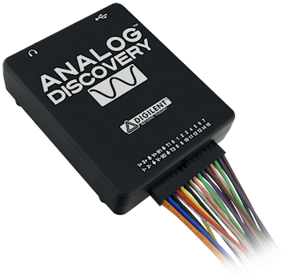

アナログ入力の分解能がやや不足気味に見えるが，ポテンショスタット側で適切な感度を設定すれば，通常は問題にならない (むしろ一般には計測系の S/N 比の方が問題になる)．
また，とくに解析機能は，制御・記録のための標準ソフトウェア WaveForms を用いるだけでもさまざまな計測を行えるが，WaveForms で得られた生データを用いて信号解析部分について独自に計算処理を行うことでも，さらに多くの応用が可能である．
この WaveForms を通じて，Analog Discovery は制御信号の発生と目的信号の記録を1台で同時に行うことができる．したがって，ポテンショスタットを用意すれば，ファンクションジェネレータとレコーダの役割をこれ一台に任せてしまうことができる．
なお，Analog Discovery はすでに出荷を終えており，機能強化された Analog Discovery 2 (製造はすでに終了) や Analog Discovery 3 に切り替わっているが，本稿の範囲ではいずれもまったく同じように使えるので，これらを特に区別しない．
|  |  |
 |
| Fig. 1.1 Analog Discovery (legacy). | Fig. 1.2 Analog Discovery 2 (discontinued). | Fig. 1.3 Analog Discovery 3. |
WaveForms
Analog Discovery の魅力は，標準制御ソフト WaveForms が非常に高機能な点にもある．WaveForms は Digilent 社のサイトから無償でダウンロードできる．Analog Discovery 自体を所有していなくても，デモモードでどのような計測ができるかを確認することができる．本稿では，基本的な測定は WaveForms を用いて行い，必要に応じて，Excel 等の外部ソフトを援用して解析を行うこととする．なお，Analog Discovery のドライバに対する API は公開されているので，電気化学に特化したソフトを作成すること自体は可能である．しかし，WaveForms は非常に高機能であり，随時改訂されて新機能が追加されている状況にあるため，ここでは WaveForms を利用することを基本とする．WaveForms は，Windows，Mac，Linux に対応しており，必要なバージョンをダウンロードし，インストーラを実行することで Analog Discovery を使用するためのドライバと合わせてインストールできる．
キャリブレーション
Analog Discovery はもともとが教育用ということもあって，安価な代わりに AD/DA コンバータのキャリブレーションも行われていない状態で出荷されている．そのため，使用前にキャリブレーションを行うことが事実上必須である．キャリブレーションには，3-1/2桁以上の分解能をもつデジタルマルチメータが必要である．キャリブレーションは WaveForms の Device Manager から，対象となるデバイスを選択し，ウィンドウ上方の Calibrate をクリックして行う．ファンクションジェネレータ1 (AWG1)，オシロスコープ1 (Ch1)，同2 (Ch2) に行う必要がある．AWG2 については使用しないのでキャリブレートしなくてもよい．実際に行う必要があるのは，